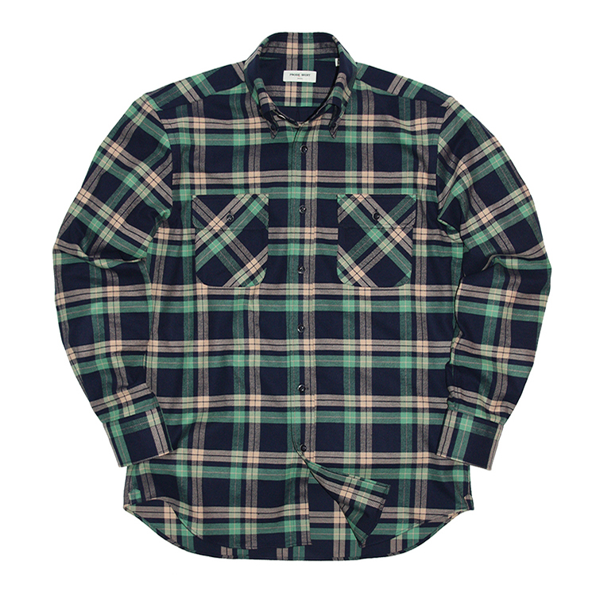
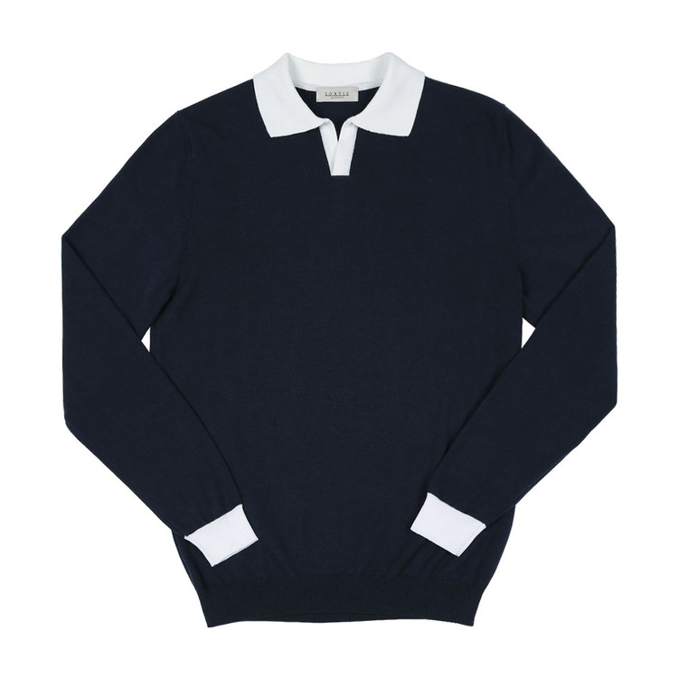

 프로드셔츠 - Cross-over Flannel Check Shirt (GR) 고급스런 체크 패턴에 크로스 오버된 앞 포켓을 부착하여 멋스러움을 더 한 플란넬 셔츠. 부드럽게 기모 처리된 코튼 플란넬 원단으로 포근함과 따뜻함을 느낄 수 있습니다.  솔티 - Blend Open Collar Knit (Navy) 14gauge로 편직 된 Sortie Knit는 워싱 가공을 통하여 축률을 줄이고 유연제 공정으로 보다 좋은 터치감과 함께 마찰에 대한 저항력이 적습니다. Sortie knit의 카라는 형태 고정이 좋으며, 일반 카라 니트와는 다르게 셔츠의 고시 역할을 편직 성형으로 자연스러운 카라의 굴림과 입체감을 주는 것이 특징입니다.